Kelp frond sheets: OCR comparison
Generated 2026-11-04 from commit
6dbfc7e. The commands at the end reproduce it.The services
This comparison tests automated parsing of frond pull-down sheets. It tried five services:
- GPT-6 Sol (OpenAI)
- OpenAI's lower-cost language model. It reads each page image and returns every field as written; this project's code applies the sheet's conventions.
- GPT-6 Astra (OpenAI)
- OpenAI's larger model, with the same instructions as Sol; it costs about 7 times as much. It read the 5 sample sheets only.
- Handwriting OCR
- A handwriting transcription service. A custom extractor, set up in its dashboard, returns the sheet's fields. It read page 1 of the 5 sample sheets (free trial limit).
- AWS Textract
- Amazon's document OCR. It finds tables and form fields and returns text with positions and confidence; this project's code turns its table into the sheet's fields.
- Google Document AI (Form Parser)
- Google's ready-made processor for tables and form fields.
What this compares, and how
This comparison checks each service's reading of the scanned sheets against the lab's first data entry,
productivity_survey_FIRST_ENTRY - fronds_pull_down_long.tsv (renamed to data/fronds_answers.tsv in the code). A mismatch marks a cell someone would check during reconciliation.Two cells match if their values agree after normalizing (
7 and 7.0 match, and times compare as HH:MM), so formatting differences don't count. The comparison pairs plants by rep, then by agreeing values. It skips cells blank in both, and doesn't compare observers.22 sheets of form version 1.8 have a human entry. GPT-6 Sol, Textract and Form Parser read all 22; GPT-6 Astra read 5 of them, and Handwriting OCR read page 1 of those 5.
Results by service
| Service | Sheets | Pages | Cells | Matching | Rows matching | Mismatches per sheet | Missed plants | Per page |
|---|---|---|---|---|---|---|---|---|
| GPT-6 Sol (OpenAI) | 22 | 36 | 4,321 | 89.7% | 31 of 173 | 20 | 2 | $0.050 |
| GPT-6 Astra (OpenAI) | 5 | 8 | 1,107 | 93.9% | 15 of 39 | 14 | 1 | $0.340 |
| Handwriting OCR | 5 | 5 | 1,041 | 92.9% | 11 of 37 | 15 | 0 | $0.150 |
| AWS Textract | 22 | 36 | 4,330 | 74.0% | 1 of 182 | 51 | 4 | $0.065 |
| Google Document AI (Form Parser) | 22 | 36 | 1,853 | 13.1% | 0 of 152 | 73 | 135 | $0.030 |
Sheet: one survey's scan (one date and site); pages counts its paper sheets, as a survey can fill several.
Matching: the share of compared cells that agree with the human entry. Br> Mismatches per sheet: the cells someone would check for each sheet, the reconciliation workload.
Missed plants: plants in the human entry with no row read (counted only where the service read every page). Hover over a price to see its source.
Google Document AI (Form Parser) isn't feasible. It merges several columns' values into one table cell with no separator (Matching: the share of compared cells that agree with the human entry. Br> Mismatches per sheet: the cells someone would check for each sheet, the reconciliation workload.
Missed plants: plants in the human entry with no row read (counted only where the service read every page). Hover over a price to see its source.
68.71225/6 holds rep 6, depth 8.7, time 1225 and 16 stipes), merges plants into fewer rows (5 or 6 rows for 8 plants on many sheets), gives no confidence for table cells, and pairs form labels with the wrong values. The comparison can't pair most of its plants, so its matching figure covers only the few rows it could pair.
Matching by field
Each service on all the sheets it read; the figures for GPT-6 Astra and Handwriting OCR come from a sample 5 sheets because they are much more expensive.
| Service | frond lengths | broken stipe (*) | depth | depth unit | time | rep | tag counts | #stipes |
|---|---|---|---|---|---|---|---|---|
| GPT-6 Sol (OpenAI) | 90% | 97% | 84% | 87% | 74% | 95% | 72% | 97% |
| GPT-6 Astra (OpenAI) | 93% | 97% | 90% | 74% | 85% | 100% | 95% | 100% |
| Handwriting OCR | 91% | 96% | 89% | 73% | 84% | 100% | 94% | 100% |
| AWS Textract | 82% | 78% | 68% | 4% | 59% | 89% | 57% | 81% |
| Google Document AI (Form Parser) | 6% | 13% | 5% | 0% | 2% | 52% | 5% | 0% |
Output
The pipeline writes each service's reading directly to a Google Sheet. It writes data using the lab's existing data-entry layout (
productivity_survey_FIRST_ENTRY - fronds_pull_down_long.tsv), one row per frond. Light yellow marks each cell the service read with low confidence (below 80%). Handwriting OCR does not report confidence scores.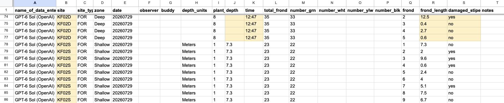
One sheet, end to end
20261016_SQPT01_FrondPull_1.8.pdf: what reconciliation could look like with OCR as the second entry.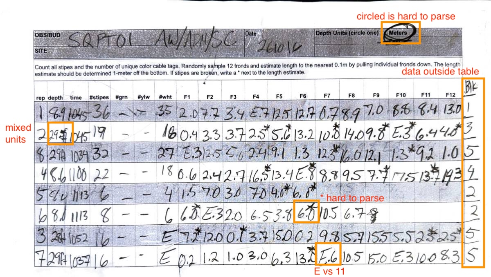
Jump to:
GPT-6 Sol (OpenAI) ·
GPT-6 Astra (OpenAI) ·
Handwriting OCR ·
AWS Textract ·
Google Document AI (Form Parser)
Sample reconciliation workflow: click a highlighted disagreement to correct it; this demo doesn't save the corrections.
GPT-6 Sol (OpenAI)
1 of 8 rows match in every cell.
| rep | depth | time | stipes | tags.grn | tags.ylw | tags.wht | F1 | F2 | F3 | F4 | F5 | F6 | F7 | F8 | F9 | F10 | F11 | F12 | depth_unit | tags.blk | |
|---|---|---|---|---|---|---|---|---|---|---|---|---|---|---|---|---|---|---|---|---|---|
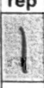 | 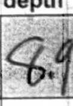 | 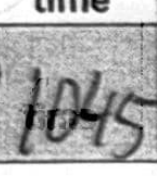 | 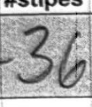 | 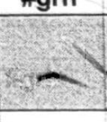 | 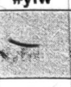 | 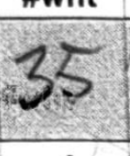 | 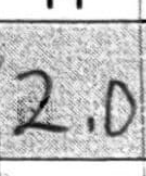 | 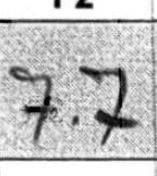 | 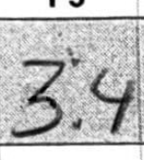 | 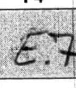 | 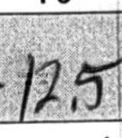 | 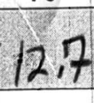 | 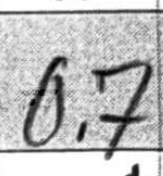 | 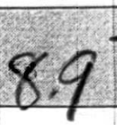 | 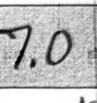 | 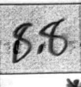 | 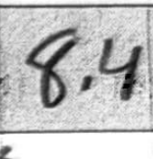 | 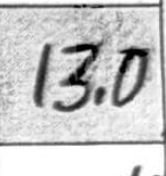 | |||
| human | 1 | 8.9 | 10:45 | 36 | 0 | 0 | 35 | 2 | 7.7 | 3.4 | 1.7 | 12.5 | 12.7 | 0.7 | 8.9 | 7 | 8.8 | 8.4 | 13 | Meters | 1 |
| GPT-6 Sol (OpenAI) | 1 | 8.4 | 10:45 | 36 | 0 | 0 | 35 | 2 | 7.7 | 3.4 | 5.7 | 12.5 | 12.7 | 0.7 | 8.9 | 7 | 8.8 | 8.4 | 13 | Meters | 1 |
| rep | depth | time | stipes | tags.grn | tags.ylw | tags.wht | F1 | F2 | F3 | F4 | F5 | F6 | F7 | F8 | F9 | F10 | F11 | F12 | depth_unit | tags.blk | |
|---|---|---|---|---|---|---|---|---|---|---|---|---|---|---|---|---|---|---|---|---|---|
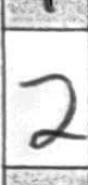 | 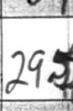 | 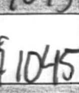 | 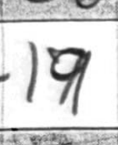 | 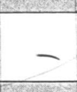 | 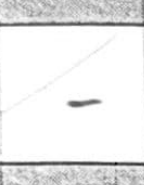 | 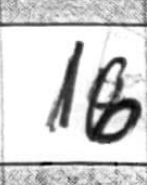 | 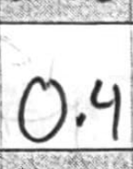 | 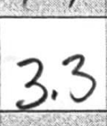 | 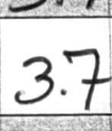 | 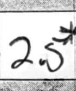 | 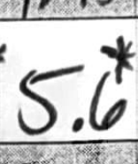 | 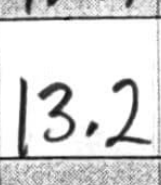 | 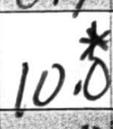 | 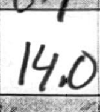 | 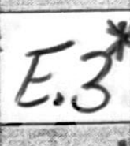 | 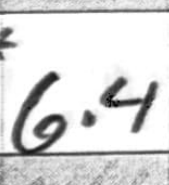 | 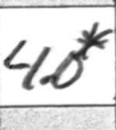 | ||||
| human | 2 | 29.5 | 10:45 | 19 | 0 | 0 | 16 | 0.4 | 3.3 | 3.7 | 2.5* | 5.6* | 13.2 | 10* | 14 | 9.8* | 11.3* | 6.4 | 4* | Feet | 3 |
| GPT-6 Sol (OpenAI) | 2 | 29 | 10:45 | 19 | 0 | 0 | 18 | 0.4 | 3.3 | 3.7 | 2.5* | 5.6* | 13.2 | 10* | 14 | 9.8* | 5.3* | 6.4 | 4* | Feet | 3 |
| rep | depth | time | stipes | tags.grn | tags.ylw | tags.wht | F1 | F2 | F3 | F4 | F5 | F6 | F7 | F8 | F9 | F10 | F11 | F12 | depth_unit | tags.blk | |
|---|---|---|---|---|---|---|---|---|---|---|---|---|---|---|---|---|---|---|---|---|---|
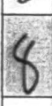 | 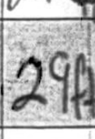 | 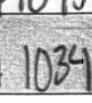 | 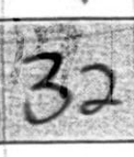 | 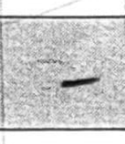 | 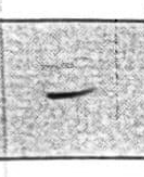 | 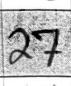 | 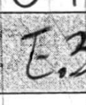 | 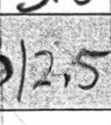 | 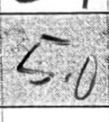 | 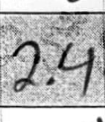 | |||||||||||
| human | 8 | 29 | 10:34 | 32 | 0 | 0 | 27 | 11.3 | 12.5 | 5 | 2.4 | 9.1 | 1.3 | 12.3* | 16 | 12.1 | 1.3* | 9.2 | 1 | Feet | 5 |
| GPT-6 Sol (OpenAI) | 8 | 29 | 10:34 | 32 | 0 | 0 | 27 | 5.3 | 2.5 | 5 | 2.4 | 9.1 | 1.3 | 12.3* | 16 | 12.1 | 1.3* | 9.2 | 1 | Feet | 5 |
| rep | depth | time | stipes | tags.grn | tags.ylw | tags.wht | F1 | F2 | F3 | F4 | F5 | F6 | F7 | F8 | F9 | F10 | F11 | F12 | depth_unit | tags.blk | |
|---|---|---|---|---|---|---|---|---|---|---|---|---|---|---|---|---|---|---|---|---|---|
| human | 4 | 8.6 | 11:00 | 22 | 0 | 0 | 18 | 0.6 | 2.4 | 2.7 | 16.5* | 13.4 | 11.8* | 8.8 | 9.5 | 7.7* | 17.5 | 13.7* | 14.3 | Meters | 4 |
| GPT-6 Sol (OpenAI) | 4 | 8.6 | 11:00 | 22 | 0 | 0 | 18 | 0.6 | 2.4 | 2.7 | 16.5* | 13.4 | 5.8* | 8.8 | 9.5 | 7.7* | 7.5 | 13.7* | 14.3 | Meters | 4 |
| rep | depth | time | stipes | tags.grn | tags.ylw | tags.wht | F1 | F2 | F3 | F4 | F5 | F6 | F7 | F8 | F9 | F10 | F11 | F12 | depth_unit | tags.blk | |
|---|---|---|---|---|---|---|---|---|---|---|---|---|---|---|---|---|---|---|---|---|---|
| human | 6 | 8 | 11:13 | 8 | 0 | 0 | 6 | 6* | 11.3 | 2 | 6.5 | 3.8 | 6* | 10.5 | 6.7 | Meters | 2 | ||||
| GPT-6 Sol (OpenAI) | 6 | 8.6 | 11:13 | 8 | 0 | 0 | 6 | 6* | 5.3 | 2 | 6.5 | 3.8 | 6* | 10.5 | 6.7 | 8 | Meters | 2 |
| rep | depth | time | stipes | tags.grn | tags.ylw | tags.wht | F1 | F2 | F3 | F4 | F5 | F6 | F7 | F8 | F9 | F10 | F11 | F12 | depth_unit | tags.blk | |
|---|---|---|---|---|---|---|---|---|---|---|---|---|---|---|---|---|---|---|---|---|---|
| human | 3 | 28 | 10:52 | 16 | 0 | 0 | 11 | 7.2* | 12 | 0.1* | 3.7 | 15 | 0.2 | 9.8 | 5.7 | 15.5 | 5.5 | 2.5* | 2.5* | Feet | 5 |
| GPT-6 Sol (OpenAI) | 3 | 28 | 10:52 | 16 | 0 | 0 | 5 | 7.2* | 12 | 0.1* | 3.7 | 15 | 0.2 | 9.8 | 5.7 | 15.5 | 5.5 | 2.5* | 2.5* | Feet | 5 |
| rep | depth | time | stipes | tags.grn | tags.ylw | tags.wht | F1 | F2 | F3 | F4 | F5 | F6 | F7 | F8 | F9 | F10 | F11 | F12 | depth_unit | tags.blk | |
|---|---|---|---|---|---|---|---|---|---|---|---|---|---|---|---|---|---|---|---|---|---|
| human | 7 | 29 | 10:37 | 16 | 0 | 0 | 11 | 0.2 | 1.2 | 1 | 3 | 6.3 | 13* | 11.6 | 10.5 | 15 | 11.3 | 10 | 8.3 | Feet | 5 |
| GPT-6 Sol (OpenAI) | 7 | 29 | 10:37 | 16 | 0 | 0 | 5 | 0.2 | 1.2 | 1 | 3 | 6.3 | 13* | 5.6 | 10.5 | 15 | 5.3 | 10 | 8.3 | Feet | 5 |
GPT-6 Astra (OpenAI)
6 of 8 rows match in every cell.
| rep | depth | time | stipes | tags.grn | tags.ylw | tags.wht | F1 | F2 | F3 | F4 | F5 | F6 | F7 | F8 | F9 | F10 | F11 | F12 | depth_unit | tags.blk | |
|---|---|---|---|---|---|---|---|---|---|---|---|---|---|---|---|---|---|---|---|---|---|
| human | 1 | 8.9 | 10:45 | 36 | 0 | 0 | 35 | 2 | 7.7 | 3.4 | 1.7 | 12.5 | 12.7 | 0.7 | 8.9 | 7 | 8.8 | 8.4 | 13 | Meters | 1 |
| GPT-6 Astra (OpenAI) | 1 | 8.9 | 10:45 | 36 | 0 | 0 | 35 | 2 | 7.7 | 3.4 | 11.7 | 12.5 | 12.7 | 0.7 | 8.9 | 7 | 8.8 | 8.4 | 13 | Meters | 1 |
| rep | depth | time | stipes | tags.grn | tags.ylw | tags.wht | F1 | F2 | F3 | F4 | F5 | F6 | F7 | F8 | F9 | F10 | F11 | F12 | depth_unit | tags.blk | |
|---|---|---|---|---|---|---|---|---|---|---|---|---|---|---|---|---|---|---|---|---|---|
| human | 2 | 29.5 | 10:45 | 19 | 0 | 0 | 16 | 0.4 | 3.3 | 3.7 | 2.5* | 5.6* | 13.2 | 10* | 14 | 9.8* | 11.3* | 6.4 | 4* | Feet | 3 |
| GPT-6 Astra (OpenAI) | 2 | 29 | 10:45 | 19 | 0 | 0 | 16 | 0.4 | 3.3 | 3.7 | 2.5* | 5.6* | 13.2 | 10* | 14 | 9.8* | 11.3* | 6.4 | 4* | Feet | 3 |
Handwriting OCR
2 of 8 rows match in every cell.
| rep | depth | time | stipes | tags.grn | tags.ylw | tags.wht | F1 | F2 | F3 | F4 | F5 | F6 | F7 | F8 | F9 | F10 | F11 | F12 | depth_unit | tags.blk | |
|---|---|---|---|---|---|---|---|---|---|---|---|---|---|---|---|---|---|---|---|---|---|
| human | 1 | 8.9 | 10:45 | 36 | 0 | 0 | 35 | 2 | 7.7 | 3.4 | 1.7 | 12.5 | 12.7 | 0.7 | 8.9 | 7 | 8.8 | 8.4 | 13 | Meters | 1 |
| Handwriting OCR | 1 | 8.9 | 10:45 | 36 | 0 | 0 | 35 | 2 | 7.7 | 3.4 | 11.7 | 12.5 | 12.7 | 0.7 | 8.9 | 7 | 8.8 | 8.4 | 13 | Meters | 1 |
| rep | depth | time | stipes | tags.grn | tags.ylw | tags.wht | F1 | F2 | F3 | F4 | F5 | F6 | F7 | F8 | F9 | F10 | F11 | F12 | depth_unit | tags.blk | |
|---|---|---|---|---|---|---|---|---|---|---|---|---|---|---|---|---|---|---|---|---|---|
| human | 2 | 29.5 | 10:45 | 19 | 0 | 0 | 16 | 0.4 | 3.3 | 3.7 | 2.5* | 5.6* | 13.2 | 10* | 14 | 9.8* | 11.3* | 6.4 | 4* | Feet | 3 |
| Handwriting OCR | 2 | 29 | 10:45 | 19 | 0 | 0 | 16 | 0.4 | 3.3 | 3.7 | 2.5* | 5.6* | 3.2 | 10* | 14 | 9.8* | 11.3* | 6.4 | 4* | Feet | 3 |
| rep | depth | time | stipes | tags.grn | tags.ylw | tags.wht | F1 | F2 | F3 | F4 | F5 | F6 | F7 | F8 | F9 | F10 | F11 | F12 | depth_unit | tags.blk | |
|---|---|---|---|---|---|---|---|---|---|---|---|---|---|---|---|---|---|---|---|---|---|
| human | 8 | 29 | 10:34 | 32 | 0 | 0 | 27 | 11.3 | 12.5 | 5 | 2.4 | 9.1 | 1.3 | 12.3* | 16 | 12.1 | 1.3* | 9.2 | 1 | Feet | 5 |
| Handwriting OCR | 8 | 29 | 10:34 | 32 | 0 | 0 | 27 | 11.3 | 2.5 | 5 | 2.4 | 9.1 | 1.3 | 12.3* | 16 | 12.1 | 1.3* | 9.2 | 1 | Feet | 5 |
| rep | depth | time | stipes | tags.grn | tags.ylw | tags.wht | F1 | F2 | F3 | F4 | F5 | F6 | F7 | F8 | F9 | F10 | F11 | F12 | depth_unit | tags.blk | |
|---|---|---|---|---|---|---|---|---|---|---|---|---|---|---|---|---|---|---|---|---|---|
| human | 4 | 8.6 | 11:00 | 22 | 0 | 0 | 18 | 0.6 | 2.4 | 2.7 | 16.5* | 13.4 | 11.8* | 8.8 | 9.5 | 7.7* | 17.5 | 13.7* | 14.3 | Meters | 4 |
| Handwriting OCR | 4 | 8.6 | 11:00 | 22 | 0 | 0 | 18 | 0.6 | 2.4 | 2.7 | 16.5* | 13.4 | 11.8* | 8.8 | 9.5 | 7.7* | 7.5 | 13.7* | 14.3 | Meters | 4 |
| rep | depth | time | stipes | tags.grn | tags.ylw | tags.wht | F1 | F2 | F3 | F4 | F5 | F6 | F7 | F8 | F9 | F10 | F11 | F12 | depth_unit | tags.blk | |
|---|---|---|---|---|---|---|---|---|---|---|---|---|---|---|---|---|---|---|---|---|---|
| human | 6 | 8 | 11:13 | 8 | 0 | 0 | 6 | 6* | 11.3 | 2 | 6.5 | 3.8 | 6* | 10.5 | 6.7 | Meters | 2 | ||||
| Handwriting OCR | 6 | 8 | 11:13 | 8 | 0 | 0 | 6 | 6* | 11.3 | 2 | 6.5 | 3.8 | 6* | 10.5 | 6.7 | 4 | Meters | 2 |
| rep | depth | time | stipes | tags.grn | tags.ylw | tags.wht | F1 | F2 | F3 | F4 | F5 | F6 | F7 | F8 | F9 | F10 | F11 | F12 | depth_unit | tags.blk | |
|---|---|---|---|---|---|---|---|---|---|---|---|---|---|---|---|---|---|---|---|---|---|
| human | 3 | 28 | 10:52 | 16 | 0 | 0 | 11 | 7.2* | 12 | 0.1* | 3.7 | 15 | 0.2 | 9.8 | 5.7 | 15.5 | 5.5 | 2.5* | 2.5* | Feet | 5 |
| Handwriting OCR | 3 | 28 | 10:52 | 16 | 0 | 0 | 11 | 7.2* | 12 | 0.7* | 3.7 | 15 | 0.2 | 9.8 | 5.7 | 15.5 | 5.5 | 2.5* | 2.5* | Feet | 5 |
AWS Textract
1 of 8 rows match in every cell.
| rep | depth | time | stipes | tags.grn | tags.ylw | tags.wht | F1 | F2 | F3 | F4 | F5 | F6 | F7 | F8 | F9 | F10 | F11 | F12 | depth_unit | tags.blk | |
|---|---|---|---|---|---|---|---|---|---|---|---|---|---|---|---|---|---|---|---|---|---|
| human | 1 | 8.9 | 10:45 | 36 | 0 | 0 | 35 | 2 | 7.7 | 3.4 | 1.7 | 12.5 | 12.7 | 0.7 | 8.9 | 7 | 8.8 | 8.4 | 13 | Meters | 1 |
| AWS Textract | 1 | 8.9 | 10:45 | 36 | 1 | 35 | 2 | 7.7 | 3.4 | 11.7 | 12.5 | 12.7 | 0.7 | 8.9 | 7 | 8.8 | 8.4 | 13 | 1 |
| rep | depth | time | stipes | tags.grn | tags.ylw | tags.wht | F1 | F2 | F3 | F4 | F5 | F6 | F7 | F8 | F9 | F10 | F11 | F12 | depth_unit | tags.blk | |
|---|---|---|---|---|---|---|---|---|---|---|---|---|---|---|---|---|---|---|---|---|---|
| human | 2 | 29.5 | 10:45 | 19 | 0 | 0 | 16 | 0.4 | 3.3 | 3.7 | 2.5* | 5.6* | 13.2 | 10* | 14 | 9.8* | 11.3* | 6.4 | 4* | Feet | 3 |
| AWS Textract | 2 | 29.5 | 10:45 | 19 | 1 | 0 | 18 | 0.4 | 3.3 | 3.7 | 2.5* | 5.6 | 13.2 | 10 | 14 | 9.8 | 11.3 | * | 3 |
| rep | depth | time | stipes | tags.grn | tags.ylw | tags.wht | F1 | F2 | F3 | F4 | F5 | F6 | F7 | F8 | F9 | F10 | F11 | F12 | depth_unit | tags.blk | |
|---|---|---|---|---|---|---|---|---|---|---|---|---|---|---|---|---|---|---|---|---|---|
| human | 8 | 29 | 10:34 | 32 | 0 | 0 | 27 | 11.3 | 12.5 | 5 | 2.4 | 9.1 | 1.3 | 12.3* | 16 | 12.1 | 1.3* | 9.2 | 1 | Feet | 5 |
| AWS Textract | 8 | 29 | 10:34 | 32 | 0 | 0 | 27 | 11.3 | 2.5 | 5 | 2.4 | 9.1 | 1.3 | 12.3 | 16 | 12.1 | 1.3* | 9.2 | 1 | Feet | 5 |
| rep | depth | time | stipes | tags.grn | tags.ylw | tags.wht | F1 | F2 | F3 | F4 | F5 | F6 | F7 | F8 | F9 | F10 | F11 | F12 | depth_unit | tags.blk | |
|---|---|---|---|---|---|---|---|---|---|---|---|---|---|---|---|---|---|---|---|---|---|
| human | 4 | 8.6 | 11:00 | 22 | 0 | 0 | 18 | 0.6 | 2.4 | 2.7 | 16.5* | 13.4 | 11.8* | 8.8 | 9.5 | 7.7* | 17.5 | 13.7* | 14.3 | Meters | 4 |
| AWS Textract | 4 | 8.6 | 11:00 | 22 | 0 | 18 | 0.6 | 2.4 | 2.7 | 16.5 | 13.4 | 11.8 | 8.8 | 9.5 | 7.7 | 7.5 | 13.7 | 14.3 | 4 |
| rep | depth | time | stipes | tags.grn | tags.ylw | tags.wht | F1 | F2 | F3 | F4 | F5 | F6 | F7 | F8 | F9 | F10 | F11 | F12 | depth_unit | tags.blk | |
|---|---|---|---|---|---|---|---|---|---|---|---|---|---|---|---|---|---|---|---|---|---|
| human | 5 | 8 | 11:13 | 6 | 0 | 0 | 4 | 1.5 | 7 | 3 | 7 | 4* | 6* | Meters | 2 | ||||||
| AWS Textract | 5 | 80 | 11:13 | 6 | 1 | 0 | 4 | 1.5 | 7 | 3 | 7 | 4* | 6* | 2 |
| rep | depth | time | stipes | tags.grn | tags.ylw | tags.wht | F1 | F2 | F3 | F4 | F5 | F6 | F7 | F8 | F9 | F10 | F11 | F12 | depth_unit | tags.blk | |
|---|---|---|---|---|---|---|---|---|---|---|---|---|---|---|---|---|---|---|---|---|---|
| human | 6 | 8 | 11:13 | 8 | 0 | 0 | 6 | 6* | 11.3 | 2 | 6.5 | 3.8 | 6* | 10.5 | 6.7 | Meters | 2 | ||||
| AWS Textract | 6 | 8.1 | 11:13 | 8 | 0 | 0 | 6 | 6.7 | 11.3 | 2 | 6.5 | 3.8 | 6.8 | 10.5 | 6.7 | 2 |
| rep | depth | time | stipes | tags.grn | tags.ylw | tags.wht | F1 | F2 | F3 | F4 | F5 | F6 | F7 | F8 | F9 | F10 | F11 | F12 | depth_unit | tags.blk | |
|---|---|---|---|---|---|---|---|---|---|---|---|---|---|---|---|---|---|---|---|---|---|
| human | 3 | 28 | 10:52 | 16 | 0 | 0 | 11 | 7.2* | 12 | 0.1* | 3.7 | 15 | 0.2 | 9.8 | 5.7 | 15.5 | 5.5 | 2.5* | 2.5* | Feet | 5 |
| AWS Textract | 3 | 28 | 10:52 | 6 | 1 | 0 | 11 | 7.2 | 12 | 0.7 | 3.7 | 15 | 0.2 | 9.8 | 5.7 | 15.5 | 5.5 | 25 | 2.5* | Feet | 5 |
Google Document AI (Form Parser)
0 of 8 rows match in every cell.
| rep | depth | time | stipes | tags.grn | tags.ylw | tags.wht | F1 | F2 | F3 | F4 | F5 | F6 | F7 | F8 | F9 | F10 | F11 | F12 | depth_unit | |
|---|---|---|---|---|---|---|---|---|---|---|---|---|---|---|---|---|---|---|---|---|
| human | ||||||||||||||||||||
| Google Document AI (Form Parser) extra | 2 |
| rep | depth | time | stipes | tags.grn | tags.ylw | tags.wht | F1 | F2 | F3 | F4 | F5 | F6 | F7 | F8 | F9 | F10 | F11 | F12 | depth_unit | |
|---|---|---|---|---|---|---|---|---|---|---|---|---|---|---|---|---|---|---|---|---|
| human | ||||||||||||||||||||
| Google Document AI (Form Parser) extra | 5 | 2 |
| rep | depth | time | stipes | tags.grn | tags.ylw | tags.wht | F1 | F2 | F3 | F4 | F5 | F6 | F7 | F8 | F9 | F10 | F11 | F12 | depth_unit | tags.blk | |
|---|---|---|---|---|---|---|---|---|---|---|---|---|---|---|---|---|---|---|---|---|---|
| human | 1 | 8.9 | 10:45 | 36 | 0 | 0 | 35 | 2 | 7.7 | 3.4 | 1.7 | 12.5 | 12.7 | 0.7 | 8.9 | 7 | 8.8 | 8.4 | 13 | Meters | 1 |
| Google Document AI (Form Parser) missed |
| rep | depth | time | stipes | tags.grn | tags.ylw | tags.wht | F1 | F2 | F3 | F4 | F5 | F6 | F7 | F8 | F9 | F10 | F11 | F12 | depth_unit | tags.blk | |
|---|---|---|---|---|---|---|---|---|---|---|---|---|---|---|---|---|---|---|---|---|---|
| human | 2 | 29.5 | 10:45 | 19 | 0 | 0 | 16 | 0.4 | 3.3 | 3.7 | 2.5* | 5.6* | 13.2 | 10* | 14 | 9.8* | 11.3* | 6.4 | 4* | Feet | 3 |
| Google Document AI (Form Parser) missed |
| rep | depth | time | stipes | tags.grn | tags.ylw | tags.wht | F1 | F2 | F3 | F4 | F5 | F6 | F7 | F8 | F9 | F10 | F11 | F12 | depth_unit | tags.blk | |
|---|---|---|---|---|---|---|---|---|---|---|---|---|---|---|---|---|---|---|---|---|---|
| human | 8 | 29 | 10:34 | 32 | 0 | 0 | 27 | 11.3 | 12.5 | 5 | 2.4 | 9.1 | 1.3 | 12.3* | 16 | 12.1 | 1.3* | 9.2 | 1 | Feet | 5 |
| Google Document AI (Form Parser) missed |
| rep | depth | time | stipes | tags.grn | tags.ylw | tags.wht | F1 | F2 | F3 | F4 | F5 | F6 | F7 | F8 | F9 | F10 | F11 | F12 | depth_unit | tags.blk | |
|---|---|---|---|---|---|---|---|---|---|---|---|---|---|---|---|---|---|---|---|---|---|
| human | 4 | 8.6 | 11:00 | 22 | 0 | 0 | 18 | 0.6 | 2.4 | 2.7 | 16.5* | 13.4 | 11.8* | 8.8 | 9.5 | 7.7* | 17.5 | 13.7* | 14.3 | Meters | 4 |
| Google Document AI (Form Parser) missed |
| rep | depth | time | stipes | tags.grn | tags.ylw | tags.wht | F1 | F2 | F3 | F4 | F5 | F6 | F7 | F8 | F9 | F10 | F11 | F12 | depth_unit | tags.blk | |
|---|---|---|---|---|---|---|---|---|---|---|---|---|---|---|---|---|---|---|---|---|---|
| human | 5 | 8 | 11:13 | 6 | 0 | 0 | 4 | 1.5 | 7 | 3 | 7 | 4* | 6* | Meters | 2 | ||||||
| Google Document AI (Form Parser) missed |
| rep | depth | time | stipes | tags.grn | tags.ylw | tags.wht | F1 | F2 | F3 | F4 | F5 | F6 | F7 | F8 | F9 | F10 | F11 | F12 | depth_unit | tags.blk | |
|---|---|---|---|---|---|---|---|---|---|---|---|---|---|---|---|---|---|---|---|---|---|
| human | 6 | 8 | 11:13 | 8 | 0 | 0 | 6 | 6* | 11.3 | 2 | 6.5 | 3.8 | 6* | 10.5 | 6.7 | Meters | 2 | ||||
| Google Document AI (Form Parser) missed |
| rep | depth | time | stipes | tags.grn | tags.ylw | tags.wht | F1 | F2 | F3 | F4 | F5 | F6 | F7 | F8 | F9 | F10 | F11 | F12 | depth_unit | tags.blk | |
|---|---|---|---|---|---|---|---|---|---|---|---|---|---|---|---|---|---|---|---|---|---|
| human | 3 | 28 | 10:52 | 16 | 0 | 0 | 11 | 7.2* | 12 | 0.1* | 3.7 | 15 | 0.2 | 9.8 | 5.7 | 15.5 | 5.5 | 2.5* | 2.5* | Feet | 5 |
| Google Document AI (Form Parser) missed |
| rep | depth | time | stipes | tags.grn | tags.ylw | tags.wht | F1 | F2 | F3 | F4 | F5 | F6 | F7 | F8 | F9 | F10 | F11 | F12 | depth_unit | tags.blk | |
|---|---|---|---|---|---|---|---|---|---|---|---|---|---|---|---|---|---|---|---|---|---|
| human | 7 | 29 | 10:37 | 16 | 0 | 0 | 11 | 0.2 | 1.2 | 1 | 3 | 6.3 | 13* | 11.6 | 10.5 | 15 | 11.3 | 10 | 8.3 | Feet | 5 |
| Google Document AI (Form Parser) missed |
Common problems
Each example below comes from a real sheet, with what each service read and a possible change to the form or the data entry, for the lab to confirm.
* for a broken stipe, written anywhere around the length
20261016_SQPT01_FrondPull_1.8.pdf, page 1. Divers write the * above, after or across the number; services miss it or read it as part of a neighboring value.| GPT-6 Sol (OpenAI) | F4 2.5* | F5 5.6* | F7 10* | F9 9.8* | F10 5.3* (human 11.3*) | F12 4* | |
|---|---|---|---|---|---|---|---|
| GPT-6 Astra (OpenAI) | F4 2.5* | F5 5.6* | F7 10* | F9 9.8* | F10 11.3* | F12 4* | |
| Handwriting OCR | F4 2.5* | F5 5.6* | F7 10* | F9 9.8* | F10 11.3* | F12 4* | |
| AWS Textract | F4 2.5* | F5 5.6 (human 5.6*) | F7 10 (human 10*) | F9 9.8 (human 9.8*) | F10 11.3 (human 11.3*) | F12 * (human 4*) | |
| Google Document AI (Form Parser) | plant not read | F4 (human 2.5*) | F5 (human 5.6*) | F7 (human 10*) | F9 (human 9.8*) | F10 (human 11.3*) | F12 (human 4*) |
Possible change: A broken-stipe column or checkbox per frond, instead of a mark on the length.
E for 11
20261016_SQPT01_FrondPull_1.8.pdf, page 1. E means 11 (E.6 is 11.6), a lab convention no OCR service knows; this project's code converts it when a service reads the E.| GPT-6 Sol (OpenAI) | F7 5.6 (human 11.6) | F10 5.3 (human 11.3) | |
|---|---|---|---|
| GPT-6 Astra (OpenAI) | F7 11.6 | F10 11.3 | |
| Handwriting OCR | F7 11.6 | F10 11.3 | |
| AWS Textract | F7 11.6 | F10 11.3 | |
| Google Document AI (Form Parser) | plant not read | F7 (human 11.6) | F10 (human 11.3) |
Possible change: Write 11 in full.
Dropped decimal points
20261016_SQPT01_FrondPull_1.8.pdf, page 1. Services lose small decimal points and read 2.5 as 25. This project's code fixes lengths over 31 m, but not smaller ones.| GPT-6 Sol (OpenAI) | F5 15 | F11 2.5* | F12 2.5* | |
|---|---|---|---|---|
| GPT-6 Astra (OpenAI) | F5 15 | F11 2.5* | F12 2.5* | |
| Handwriting OCR | F5 15 | F11 2.5* | F12 2.5* | |
| AWS Textract | F5 15 | F11 25 (human 2.5*) | F12 2.5* | |
| Google Document AI (Form Parser) | plant not read | F5 (human 15) | F11 (human 2.5*) | F12 (human 2.5*) |
Possible change: Printed decimal boxes, or a printed decimal point in each cell.
Hand-added tag column (Blk)
20261016_SQPT01_FrondPull_1.8.pdf, page 1. Divers add new tag colors by hand to the right of F12, outside the printed table, where table detection doesn't look.| GPT-6 Sol (OpenAI) | tags.blk 5 | |
|---|---|---|
| GPT-6 Astra (OpenAI) | tags.blk 5 | |
| Handwriting OCR | tags.blk 5 | |
| AWS Textract | tags.blk 5 | |
| Google Document AI (Form Parser) | plant not read | tags.blk (human 5) |
Possible change: Print blank extra tag columns on the form.
Circled depth unit, and units mixed within a sheet
20261016_SQPT01_FrondPull_1.8.pdf, page 1. Divers circle the unit once in the header (Meters here), but write some rows in feet (29ft). OCR services don't report which word the diver circled.| GPT-6 Sol (OpenAI) | depth 29 (human 29.5) | depth_unit Feet | |
|---|---|---|---|
| GPT-6 Astra (OpenAI) | depth 29 (human 29.5) | depth_unit Feet | |
| Handwriting OCR | depth 29 (human 29.5) | depth_unit Feet | |
| AWS Textract | depth 29.5 | depth_unit (human Feet) | |
| Google Document AI (Form Parser) | plant not read | depth (human 29.5) | depth_unit (human Feet) |
Possible change: A unit column (m / ft) on each row.
Site written in the OBS/BUD box
20261016_SQPT01_FrondPull_1.8.pdf, page 1. Here the site code is in the OBS/BUD box and the SITE box is empty.| GPT-6 Sol (OpenAI) | OBS/BUD SAP101 AW/AD/SC | site used SQPT01 |
|---|---|---|
| GPT-6 Astra (OpenAI) | OBS/BUD SQPT01 AW/ADY/SC | site used SQPT01 |
| Handwriting OCR | OBS/BUD AW/ADM/SC | site used SQPT01 |
| AWS Textract | OBS/BUD SQPT01 AW/ADN/SC | site used SQPT01 |
| Google Document AI (Form Parser) | OBS/BUD | site used SQPT01 |
Possible change: Data-entry guidance: site in the SITE box only.
Tick marks beside reps
20260731_KF01S_FrondPull_1.8.pdf, page 1. Divers tick plants off; services read the tick as a letter (J 1, V 2).| GPT-6 Sol (OpenAI) | rep 1 | |
|---|---|---|
| AWS Textract | rep 1 | |
| Google Document AI (Form Parser) | plant not read | rep (human 1) |
Possible change: Data-entry guidance, or a separate checkbox for ticking off.
Transferred pages
20260921_BR01D_FrondPull_1.8.pdf, page 2. Page 2 repeats plants from page 1 (here rep 3), copied onto a clean page. Scoring ignores the copies, but a production system has to tell copies from new plants.Possible change: Scanning convention: scan the clean copy only, or mark copies.
The oversized scan
The scanner stored
20261016_SQPT02_FrondPull_1.8.pdf at about three times the usual page size (about 33 × 25 inches), so at 300 dpi its page comes to 9,834 × 7,575 pixels, over OpenAI's image limit. The pipeline now scales every page to the same size before sending it to the LLM. Possible change: a fixed page size in the scanner settings.Maintenance, per service
What a lab member would have to do to keep each service working.
- GPT-6 Sol / Astra (OpenAI)
- When OpenAI retires a model, replace its ID in
MODELS(comparison/llm_api/config.py), then rerun and rescore to check that the new model reads as well; prices and behavior can change between models. Keep the API key inlocal.env, and billing on the OpenAI account. - Handwriting OCR
- The custom extractor lives only in the vendor's dashboard. The API can list extractors but can't read, create or export their fields, so keep a written copy of the extractor's definition in the repo, to rebuild it if it's lost. Each new tag color needs a new field in the dashboard. Buy page credits by hand, in blocks of 100 that last a year; the API shows the balance, but buying credits through it needs a subscription. Keep the API key in
local.env. - AWS Textract
- Textract's API is stable, but this project has the most mapping code for it (
comparison/aws_textract/map.py): reading the header from label lines, finding the hand-added tag column outside the table, ignoring tick marks beside reps. A change to the form will likely need a change there. Keep AWS credentials and the S3 bucket. - Google Document AI (Form Parser)
- Not recommended (see results by service). To keep it: the processor in the Google Cloud console, and the service account key.
- Every service
- Update the shared conventions in
comparison/grid.pyand the known site codes (KNOWN_SITES,comparison/config.py) when the form or the data entry changes.KNOWN_SITESlives in the repo for now, so a new site means a code change; reading it from a Google Sheet instead would let lab members add sites without touching code.
How to reproduce
Run these from
comparison/, where its Makefile lives; every path, FILES included, is relative to that folder.make prep # rotate the scans
make answers # parse the human entry
make extract SERVICE=<service> FILES=data/fronds_sample.txt # and FILES=data/fronds_remaining.txt
make map SERVICE=<service>
make validate SERVICE=<service>
make score SERVICE=<service>
make report # this pageServices:
aws_textract, google_document_ai, handwriting_ocr, llm_api (every model in MODELS). Handwriting OCR takes FILES=data/fronds_handwriting_ocr.txt. make extract skips files it already has results for; make clean-results SERVICE=<service> clears them to run again.